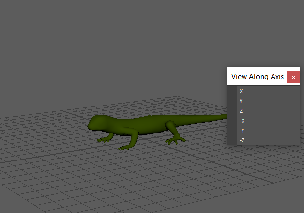
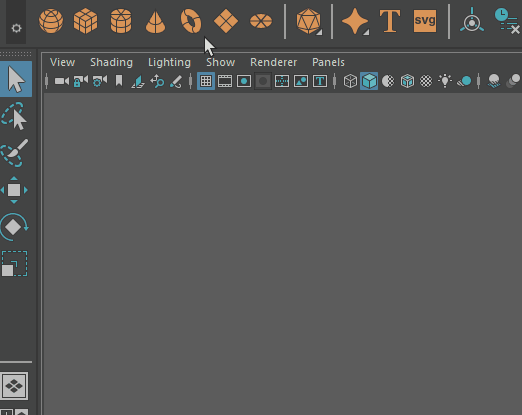

ViewCube 未包含在 Maya 2018-2022 版本中，但如果需要在没有 Viewcube 的情况下在视口中快速切换视图，请创建
“沿轴查看”(View Along Axis)菜单的拖曳菜单：

- 在 Maya 面板菜单中，选择视图(View) >“沿轴查看”(View Along Axis)。
- 双击菜单顶部的两条虚线进行拖拽，使其变为一个单独的窗口。

有关创建浮动菜单的信息，请参见菜单和菜单集主题中的拖拽菜单。
- 根据需要放置“沿轴查看”(View Along Axis)菜单，然后单击要查看的轴。